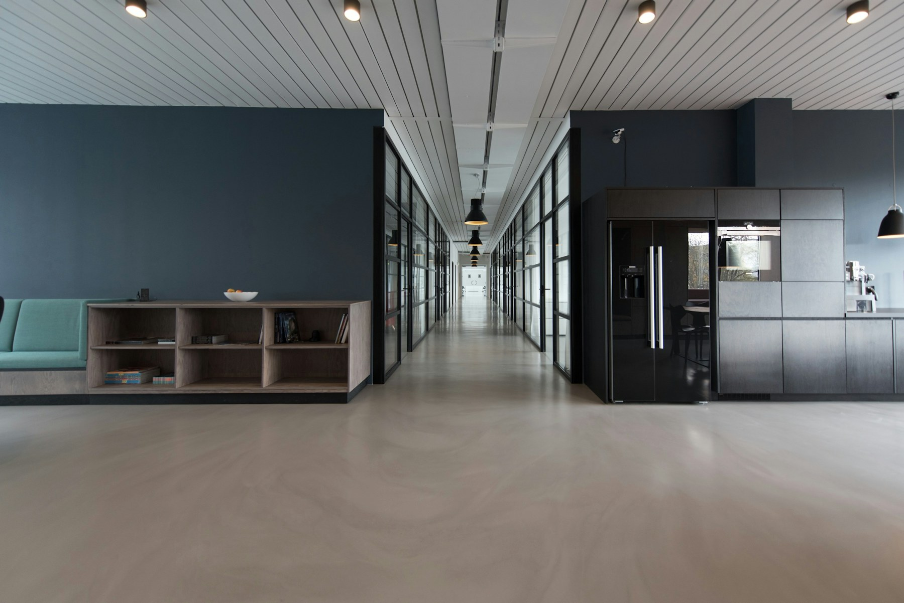

NOTE / 0114 NOVEMBER 2026 · 4 MIN READ
The difference between a questionnaire and a decision record
Practical steps for keeping the context, the owner and the next decision together.
Read the notePractical articles about clear records, useful handovers and considered decisions. Written for the people doing the work.

NOTE / 01Practical steps for keeping the context, the owner and the next decision together.
Read the notePractical steps for keeping the context, the owner and the next decision together.
Read the note